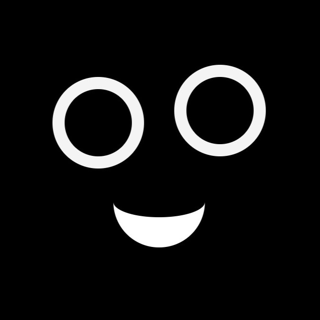

Devesh Keshavan

Who am I?
Hi, I'm Dev — currently in the final year of my Undergraduate program in Computer Science and Engineering. I have a strong passion for Full-Stack Web Development and System Design. I love learning, building, and creating solutions that make life a little easier and more engaging. I enjoy collaborating with teams that explore diverse ideas and perspectives, and I'm motivated by the process of bringing concepts to life through thoughtful design and engineering. I would love the opportunity to contribute—please reach out if you think I'd be a good fit for your team.